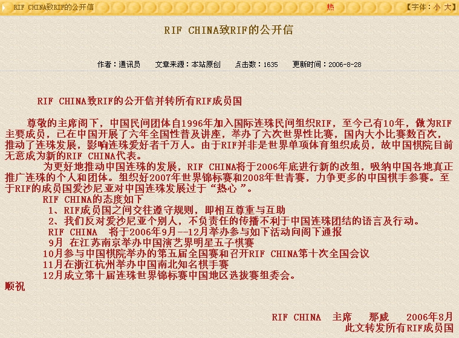
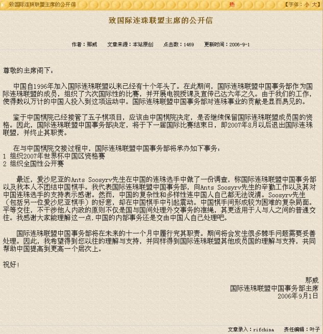

现在的rifchina有组织此次rif连珠世锦赛的资格吗？
首页
五子棋新闻
#1 现在的rifchina有组织此次rif连珠世锦赛的资格吗？ 作者：悟子 发表时间：2009-6-11 10:50:26


#2 Re:现在的rifchina有组织此次rif连珠世锦赛的资格吗？ 作者：有志青年 发表时间：2009-6-11 11:21:30
1、这两份公开信的日期好像有点问题吧
2、已经说过不再讨论此次组队相关话题了，还是……吧
3、个人倒是赞同伟鬼老师的观点，既然rifchina说了算，那么你公开征集报名不是忽悠人吗？【可rifchina解释说没有收到报名信息呀】
算了，伤脑筋哟
#3 Re:现在的rifchina有组织此次rif连珠世锦赛的资格吗？ 作者：梅边笛 发表时间：2009-6-11 11:26:02
呵呵,目前看来已没什么转机了，拭目以待RC后5年发展。
佩服一下北京的李一、菜农等几位棋手，身为北京棋手，仍能说出正义的主张。值得敬佩。
现在还是继续学习，拆棋，下棋，该干嘛干嘛吧，大家该说的也都说了。
#4 Re:现在的rifchina有组织此次rif连珠世锦赛的资格吗？ 作者：有志青年 发表时间：2009-6-11 11:30:36
参阅：土豆老师的文章《小天棋情进 棋友们冷静》